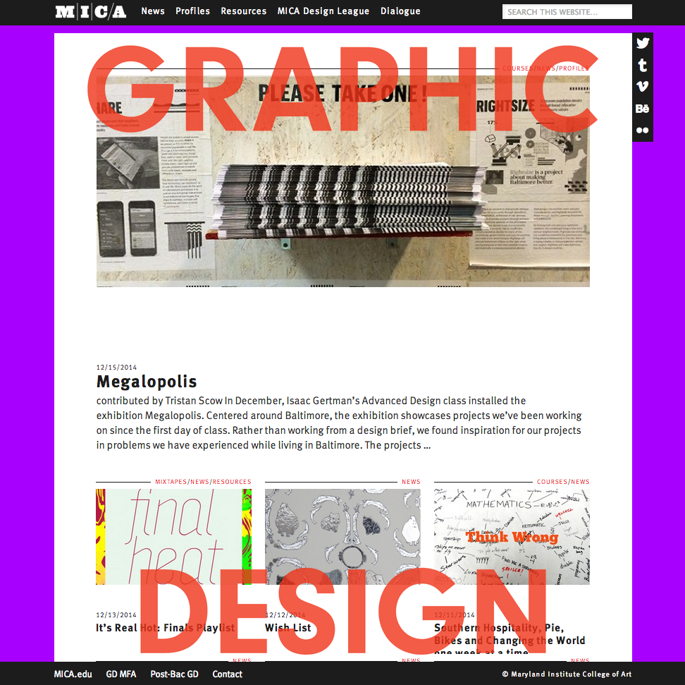
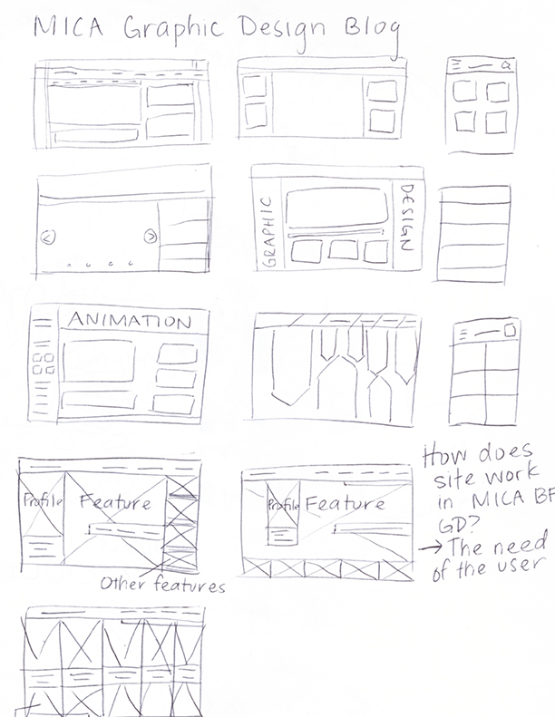
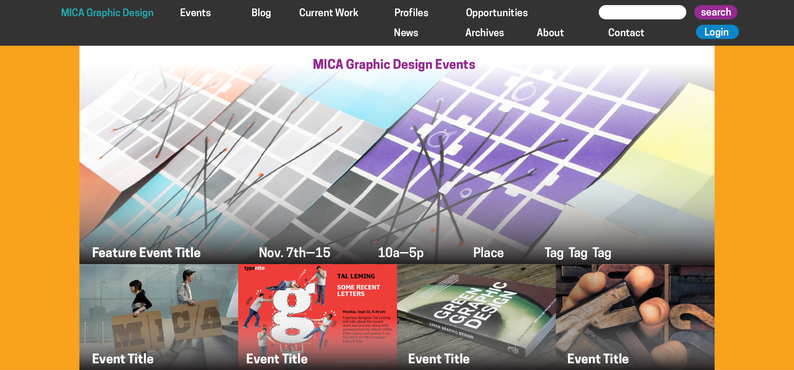
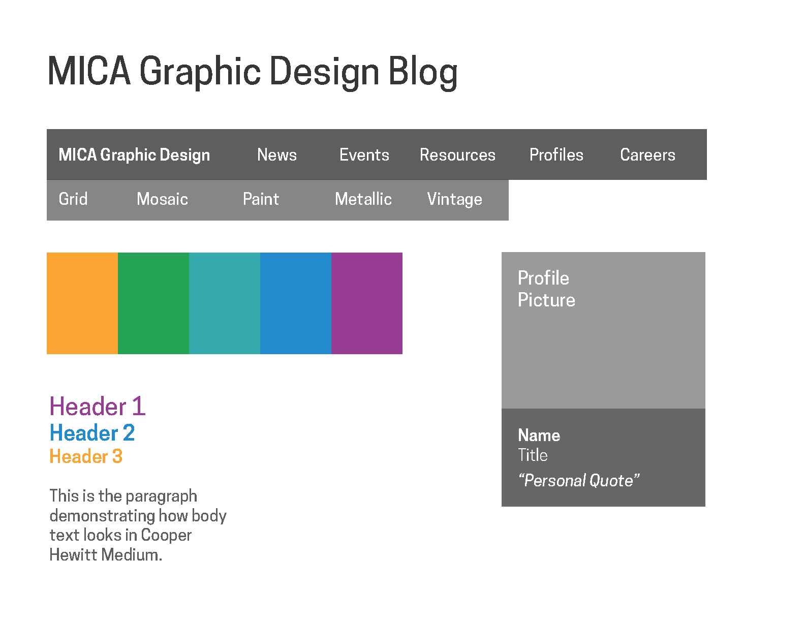
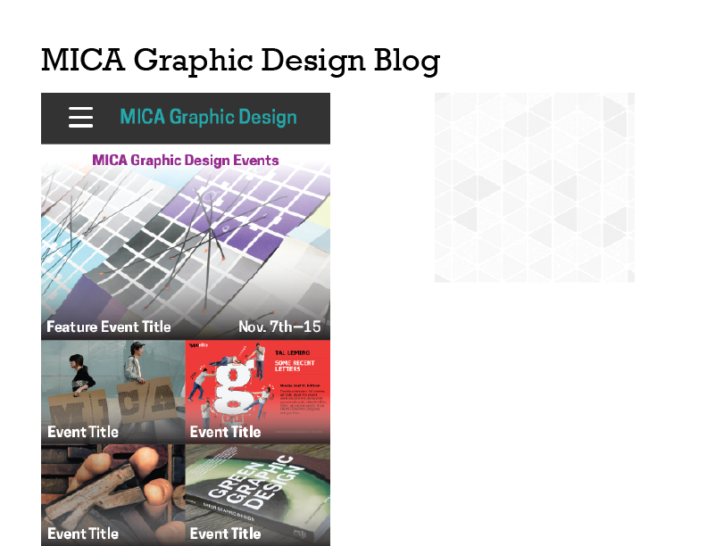
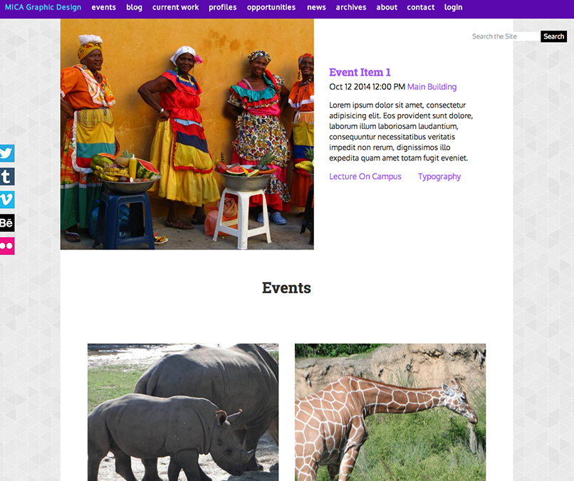
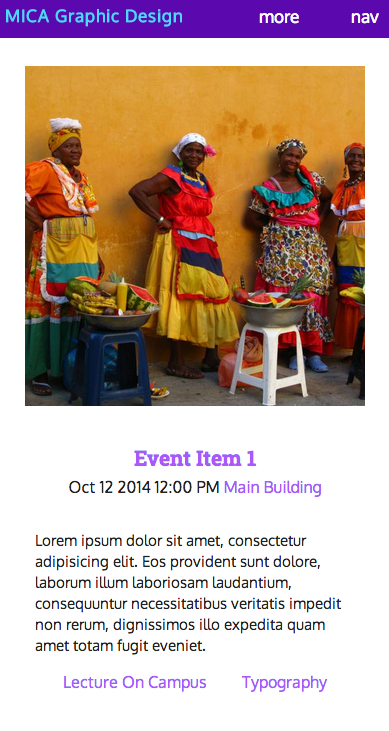
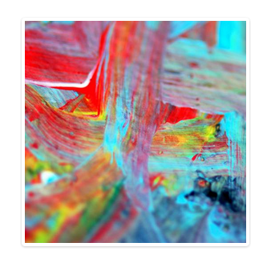

Portfolio
Redesigning MICA Graphic Design Blog: A Case Study
Introduction
In fall 2014, the MICA undergraduate graphic design blog needed a re-design, and the co-chair of the MICA Graphic Design undergraduate department (i.e., client) tasked several students me with re-designing the site. The blog had distracting visuals and needed streamlined content. Subsequently, students were reluctant to use the site, and other students were unaware of such a site. As part of a web design class, I created a WordPress theme for the blog with the goals of improving the user experience by helping organize a new information architecture, simplify the layout, and enable mobile browsing.
{kind=link}
The User
The redesign began with research that included a content audit, interviews of users, and a competitive analysis. Users agreed that the while it was good to have a blog and a site with department updates, the site was not very user-friendly and did not give users full access to the site's resources. Specifically, users disliked the text "GRAPHIC DESIGN" with a fixed position on the screen, and the hover effects were equally invasive.
The target audience included MICA graphic design students and faculty, specifically the undergraduate department. I interviewed both students and faculty to gauge the overall perception and success of the site with its target users. From my interviews, I found that not many used the website, and a few students who were new to the graphic design major did not know about the blog site at all. Thus, I created three personas: John Mica, Jane Mica, and Freddie Mica. All were graphic design majors, and each had the goal of seeing students' work, learning more about internships, and refining his abilities respectively.
{kind=link}
Exploration
Incorporating the users' needs and feedback as well as the client's guidelines, I began sketching and designing the site as needed. My process began with sketches and progressed with a creative brief in addition to style tiles. I explored different typefaces like Montserrat and Cooper Hewitt, but chose other typefaces. Wanting the site to have a friendly tone, I leveraged a color palette of purples and light blues and used web-friendly typefaces in the end like Roboto Slab and Oxygen, courtesy of Google Fonts.
  {kind=link}
{kind=link}
{kind=link}
The client provided the HTML for the blog with the expectation that I would code the CSS and JavaScript that would make the site more mobile-friendly. As I coded and developed the site, I did lots of experimentation, trying layouts based on various mock-ups and style tiles, in order to keep the content at the forefront and the "delight factor" in play.
During the development phase, coding was especially difficult when I was developing the navigation bar. In addition, I was unsure where to put the submenu as well. In the end, I simplified my designs and followed through with the hierarchy of content.
{kind=link}
Goals & Results
In class, students and I agreed on the site's content, and because of the class discussions, I simplified the layout and created a more responsive design. Through the exploration and development phases, I attempted to create a more vibrant layout meant to entice the reader with the content. I also wanted to ensure easy navigation throughout the site.
 {kind=link}
{kind=link}
The final theme included responsive CSS and JavaScript, a more subdued color palette, and an easier navigation structure. I named the theme "Purple Monster." Because users needed a more user-friendly site, I simplified the site with a two-column layout for the full screens and mostly a one-column layout for the mobile screens. To add to the "delight factor," I formatted the Spotify playlist at the bottom of the homepage. I customized the navigation bar as well and kept the less important content like the submenu at the bottom of the page.
The project allowed me to expand my coding skills, and I was able to learn more about the best practices of CSS and JavaScript. The biggest web design project yet, I coded over 1300+ lines of CSS. With the theme complete, I learned that I can continue developing my skills with web typography, coding, and mock-ups.
Check out the Home, the Events List, and the Blog Detail.